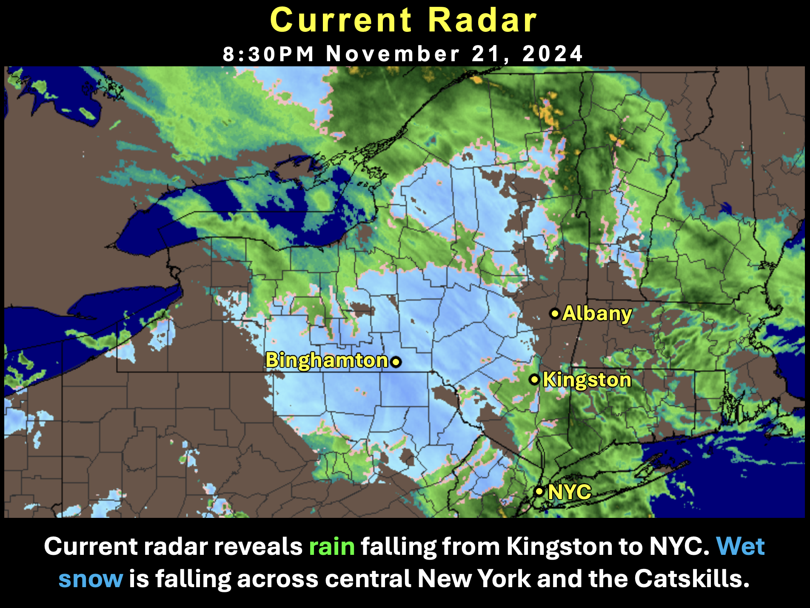
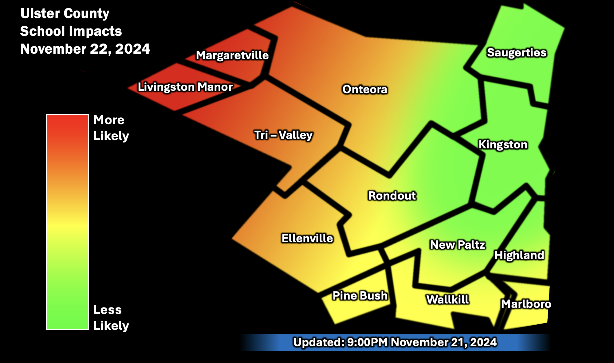
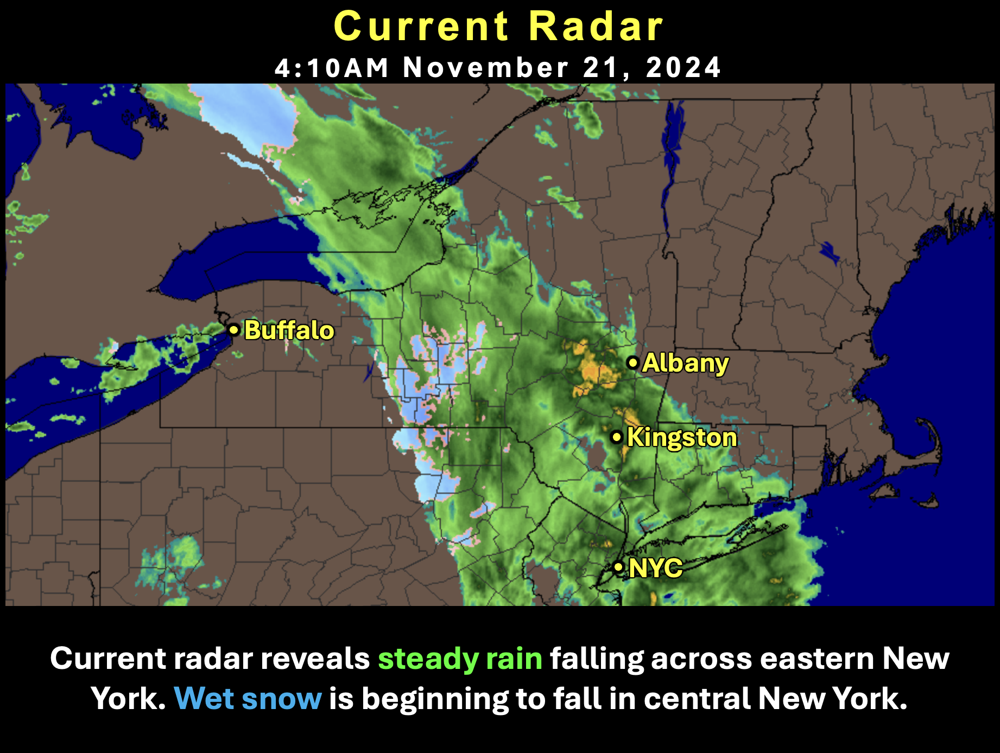
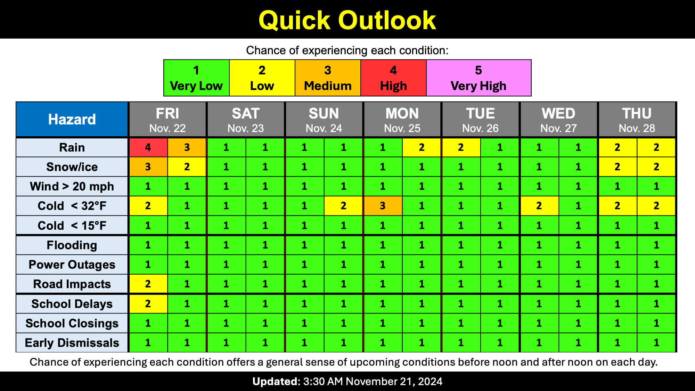

Season's first snowflakes
School Forecast
for Friday November 22nd
Last updated: 9:00PM Thursday November 21, 2024
| 10% (Low) |
|---|
| 0% (Nope) |
|---|
| 0% (Nope) |
|---|
___________________
9:00PM Thursday:
The ongoing storm continues to impact Ulster County. As of 9PM, temperatures in the Kingston area are around 39 degrees and about 1.00 inch of rain has fallen so far. Snow is now falling in the Catskills with rain falling in the rest of the county.

The Forecast:
Tonight, temperatures will gradually fall reaching the lower 30s early Friday morning. This will allow most of the county to change over to wet snowflakes. Outside of the Catskills where heavy snow will occur, a general 0 to 2 inches of snow is possible in Ulster County. The lowest amounts are likely to be in the northwest part of the county near Saugerties/Kingston and the highest amounts are most likely toward the southern parts of the county near Ellenville/Pine Bush. Here in Kingston, little or no snow accumulation is expected - if there is snow accumulation, it'll likely be limited to a slushy coating on grass and cars with roads just being wet. The best chance for any snowflakes in the Kingston area will be between 5AM and 12PM.

School Impacts:
School impacts tomorrow are still likely to vary throughout Ulster County with some districts closing and some having normal classes. Districts in the Catskills (Livingston Manor & Margaretville) still have a high chance of closing and some districts with higher terrain (Onteora, Tri-Valley, & Ellenville) may issue delays or close. The lowest chance for school impacts is in the northeast portion of the county (Saugerties and Kingston).
Have a safe and great night!
-Ethan
___________________
5:00AM Thursday:
Our first notable storm in weeks is currently moving through the region. As of 5AM, it is raining in Kingston. Local temperatures are currently in the low to mid 40s throughout Ulster County and about 0.20 inches of rain has already fallen. Wet snow is beginning to fall in portions of central New York. There have been no significant changes to the forecast for this storm.
Today:
Rain will continue throughout the day. Just over an inch of rain is likely by 12AM tonight, which would make this our wettest day since August 10th - over 100 days ago. This is just the 6th time this century that Ulster County has gone over 100 days without a one-inch rain day. Over the past 60 days Ulster County has had 6 to 8 inches less rainfall than we normally get this time of year and the region is currently experiencing a severe drought, so today's rain is very beneficial. Temperatures look to hold steady in the mid-40s.
Friday:
Tonight, rain will change to snow across parts of the region. Snow will mainly fall in the Catskill Mountains. Here in the Valley, temperatures should drop down to the mid-30s by early Friday morning. This should be just cold enough for some wet snowflakes to fall between 5AM and 10AM in the Kingston area. Temperatures should rebound to around 40 during the day on Friday causing any morning snow to change back to rain showers. All rain and snow showers should end by early Friday evening. Still expecting little or no snow accumulation in the Kingston area, but if temperatures end up slightly cooler than currently forecast there could be a light coating. The Shawangunk Ridge near New Paltz could see 2 to 4 inches of snow while the Catskill Mountains will likely see 4 to 8 inches.

Storm Impacts:
Overall, impacts from this storm look to be relatively minor in the Kingston area. With the rain, flooding is not a concern because of how dry it has been lately. As for the snow tomorrow, up in the Catskills out past Phonecia sticky wet snow could result in damaged tree branches and some power outages. However, here in the Kingston area no impacts are currently expected. The ground will likely be too warm and wet for any snow to stick to the roads. If there are any snow accumulations in the Kingston area, they are likely to be limited to cooler surfaces like grassy areas and cars.
School impacts on Friday will likely vary throughout the county. Districts in the Catskills (Livingston Manor & Margaretville) have a high chance of closing, some districts with higher terrain (Onteora) may issue delays, and many districts along the river and in the valleys (including Kingston) will likely have no school impacts.
Next Update:
At 10PM Tonight
-Ethan

KingstonSnows | Kingston, New York
Website built by Ethan Burwell